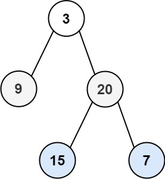

二叉树的层序遍历
题目
给你二叉树的根节点 root ，返回其节点值的 层序遍历 。 （即逐层地，从左到右访问所有节点）。
示例 1：

输入： root = [3,9,20,null,null,15,7]
输出： [[3],[9,20],[15,7]]
示例 2：
输入： root = [1]
输出： [[1]]
示例 3：
输入： root = []
输出： []
提示：
- 树中节点数目在范围
[0, 2000]内 -1000 <= Node.val <= 1000
/**
* Definition for a binary tree node.
* function TreeNode(val, left, right) {
* this.val = (val===undefined ? 0 : val)
* this.left = (left===undefined ? null : left)
* this.right = (right===undefined ? null : right)
* }
*/
/**
* @param {TreeNode} root
* @return {number[][]}
*/
var levelOrder = function(root) {
};参考答案
方法1.广度优先遍历
- 思路：准备一个队列，将根节点加入队列，当队列不为空的时候循环队列，每次循环拿到当前队列的大小，在循环当前层的每个元素，然后加入输出数组ret中，如果这个元素存在左右节点则将左右节点加入队列
- 复杂度分析：时间复杂度
O(n)，每个点进队出队各一次，故渐进时间复杂度为O(n)。空间复杂度O(n)，队列中元素的个数不超过 n 个
var levelOrder = function(root) {
const ret = [];
if (!root) {
return ret;
}
const q = [];
q.push(root);//初始队列
while (q.length !== 0) {
const currentLevelSize = q.length;//当前层节点的数量
ret.push([]);//新的层推入数组
for (let i = 1; i <= currentLevelSize; ++i) {//循环当前层的节点
const node = q.shift();
ret[ret.length - 1].push(node.val);//推入当前层的数组
if (node.left) q.push(node.left);//检查左节点，存在左节点就继续加入队列
if (node.right) q.push(node.right);//检查左右节点，存在右节点就继续加入队列
}
}
return ret;
};
方法2：深度优先遍历
- 思路：从根节点开始不断递归左右子树，透传step层数和res输出数组。
- 复杂度分析：时间复杂度
O(n),n是节点的个数。空间复杂度O(n)，n是树的高度。
var levelOrder = function(root) {
if(!root) return []
let res = []
dfs(root, 0, res)
return res
};
function dfs(root, step, res){//每层透传当前节点，层数，和输出数组
if(root){
if(!res[step]) res[step] = []//初始化当前层数组
res[step].push(root.val)//当前节点加入当前层数组
dfs(root.left, step + 1, res)//step+1，递归左节点
dfs(root.right, step + 1, res)//step+1，递归右节点
}
}